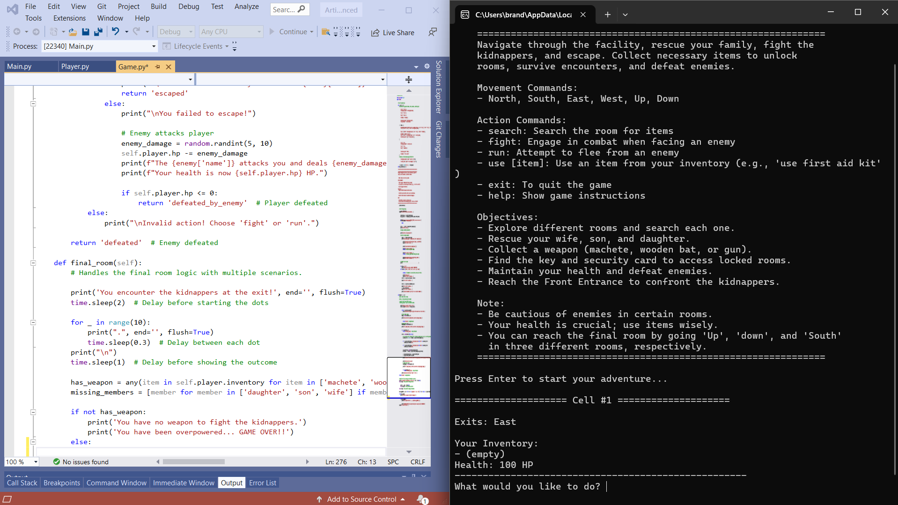

Artifact 1: Software Design and Engineering
Description: The first artifact is a text-based game, written in Python, named “Escape the Kidnappers.” In its original form, it was a simple script and was the first coding project I ever completed at Southern New Hampshire University (SNHU). The original was created in early 2021 and consisted of pretty straightforward gameplay. The player could move to different rooms, collect items, and try to escape the kidnappers by collecting all six items.
Narrative: The game was straightforward and poorly developed, which is partially why I chose it as my first artifact. I selected this artifact for my ePortfolio because it provided an excellent opportunity to show my growth in software design and engineering. Transforming the simple script into a much more sophisticated application perfectly demonstrates growth in this area.
I refactored the original code to take on a more object-oriented design by creating classes such as Player and Game. This major enhancement demonstrates my ability to use fundamental software engineering principles that help create modular, maintainable, and scalable code. Upon completing the code refactoring, I began the enhancement of game mechanics by incorporating new features such as combat, health management, enemy encounters, and item utilization. I enhanced the artifact's architecture by segmenting the code into several modules. This massively enhances maintainability and readability, which makes the artifact much more manageable for me or other developers to improve on in the future.
I made improvements like more descriptive instructions, a help command that displays the instructions, and clear feedback on user inputs in order to make the game more user-friendly. These enhancements improve how the game handles bad user inputs and assist the player throughout their game. I also worked on the documentation and error handling, in the artifact, by adding more frequent, detailed comments, exception handling, and input validation. This not only makes the game easy to play but also better organized and much easier to expand in the future. These important enhancements properly demonstrate my ability to design software with a focus on user experience and develop high-quality code that benefits users and future developers.
The Escape the Kidnappers artifact was enhanced in many different areas that all play a role in its success. First, the game world was expanded by introducing more rooms, items, and enemies. This made the game much more immersive and enjoyable for players. The game world expansion led to multiple possible endings, which greatly boosts the game’s replay value by offering different endings instead of just a survive or die ending that the original had. Second, new features like combat, health management, item usage, and enemy encounters were introduced and added depth and much needed strategy to the gameplay. Third, the code was restructured using object-oriented principles, which improved its organization and made it easier to maintain and build upon. Fourth, better instructions, functionality, and feedback were implemented to help players understand the game more easily. Finally, enhancements dealing with input validation and error handling made the game much more stable and user-friendly by sending a message to the user rather than creating an error and closing the game.
Through the enhancements made on this artifact, I was able to meet a few different course outcomes, particularly focusing on outcomes one, three, and four. These are the course outcomes that I originally planned on achieving through this artifact. I set a solid foundation for a collaborative environment by organizing the code in a modular way with clear and descriptive documentation. The code is much easier to understand, contribute to, and build upon as a result of these enhancement, which are key for creating collaborative environments that are accessible to a diverse audience. I accomplished course outcome three through the enhancements involved in designing algorithms for a basic combat system, health management, and item interaction. I selected appropriate data structures such as dictionaries for the rooms and items, and lists for inventory management which balances efficiency and complexity in a way that aligns with computer science practices and principles. Outcome four was met by applying object-oriented design, code modular organization, and other software engineering best practices. I have created a much more robust and scalable application by implementing these techniques and practices.
I made more progress toward course outcome two, even though course outcomes one, three, and four received the majority of my focus. This was accomplished by improving the help command, input feedback, and game instructions. By making instructions more understandable and easier to grasp, these player-specific enhancements improved communication between the player and the game. Throughout the code, there are useful comments which demonstrate high-quality writing communication that is tailored for a different audience. The original course outcome coverage plan is still in place, and I intend to improve on the following artifact in order to make further progress in each course outcome.
The entire process of enhancing this artifact was very gratifying. Enhancing this artifact is something that I have wanted to do for a long time now, and finally, being able to do it felt very rewarding. It has been a long time since I worked on a coding project where I enjoyed what I was doing, and I believe that shows in all the enhancements that were made to this artifact. I included more complexity than what I had initially planned due to me just having fun with the coding process. I learned that I do enjoy developing code when it is something that I am interested in. At the start of this course, I ultimately believed I had lost all interest in coding, but this artifact enhancement milestone sparked my interest again.
I faced a few different challenges with this artifact. The first was a function to clear the gameplay screen of all previous input prompts. I created a clear_screen() method, and I could not get it to function correctly. I ultimately decided to omit that feature and decided to clean up the output with spacing and separator lines. I also had a difficult time creating the basic combat and health systems. I went through five different versions before I finally felt good about their functionality. Overall, I was very rusty and relied on a lot of trial and error and research, but I really enjoyed enhancing this artifact.
View Artifact 1 Files